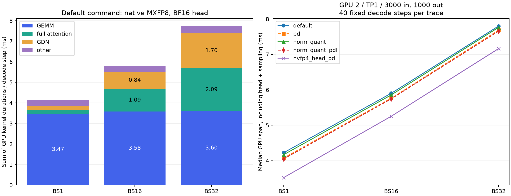
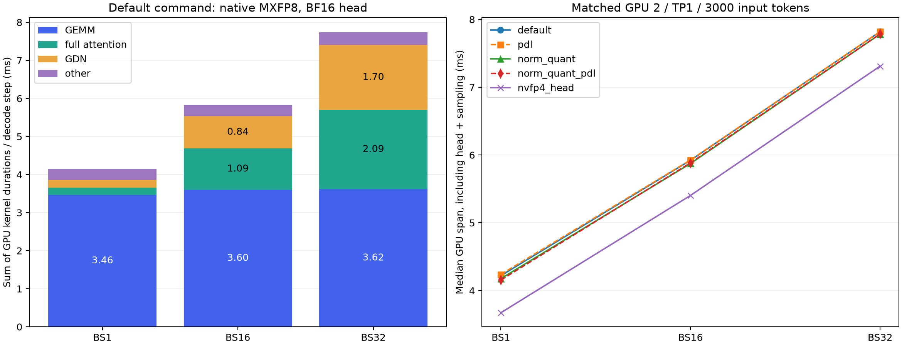

2026-09-30，RTX 5090 GPU 2，native MXFP8 使用 mxfp6 包，BF16 KV/SSM，Triton attention，默认 VLLM_COMPILE / FULL_AND_PIECEWISE。32 层：24 GDN + 8 full attention。GDN TP1 优化未开启。
每个 BS 每组配置先完成一次同 BS 的 3000/1000 预热，再运行三次未开启 profiler 的 3000/1000 请求。另一次 3000/1000 请求延迟 80 个调度 iteration 后采样 40 个固定 BS decode step。分项数据是此早期窗口的 kernel duration 总和，不是整个 1000 输出的平均耗时；attention 随上下文增长。HTTP TPOT 覆盖完整输出，包含最初 mixed prefill、队尾及前端开销。不同请求同步到达，服务并发为 BS；trace 校验纯 decode 时实际 BS。
此表优先于下方旧版 v1 的 PDL 结论。GPU 2、TP1、BS1/16/32，每组预热后运行三次完整 3000/1000，再采样 40 步。各组均使用同一对新库；仅切换 PDL / norm_quant 开关。启用了 CUTLASS GDC，并补齐 dense cooperative / ping-pong 的 SM120 producer trigger、cache_hint / occupancy / irregular / tma256 的 launch/wait/trigger、原生量化消费者和 GemmaRMSNorm。SwiGLU/量化与残差/norm/量化 producer 也支持 PDL。attention、GDN、BF16 BA 和 lm_head 仍为普通边界。
本轮完整请求 TPOT 降低（BS1/16/32）：PDL 单独 3.10% / 1.94% / 1.21%；norm_quant + PDL 3.76% / 2.30% / 1.42%；已有 NVFP4 head + PDL（norm_quant=0）16.40% / 9.70% / 6.87%，为本轮最快配置。仅 PDL 的 147 个请求全部与基线文本一致，融合 + PDL 的全部 147 个请求与融合单独开启一致。融合和 NVFP4 head 的文本差异见下表。
| BS | 配置 | 完整请求 TPOT ms | TPOT 降低 | GPU span ms | 其他 ms/step | 相对基线文本相同 |
|---|---|---|---|---|---|---|
| 1 | default | 4.173 | +0.00% | 4.227 | 0.283 | 3/3 |
| 1 | pdl | 4.044 | +3.10% | 4.078 | 0.353 | 3/3 |
| 1 | norm_quant | 4.131 | +1.02% | 4.171 | 0.244 | 3/3 |
| 1 | norm_quant_pdl | 4.016 | +3.76% | 4.051 | 0.314 | 3/3 |
| 1 | nvfp4_head_pdl | 3.489 | +16.40% | 3.524 | 0.381 | 3/3 |
| 16 | default | 6.385 | +0.00% | 5.902 | 0.292 | 48/48 |
| 16 | pdl | 6.261 | +1.94% | 5.762 | 1.416 | 48/48 |
| 16 | norm_quant | 6.351 | +0.53% | 5.856 | 0.263 | 15/48 |
| 16 | norm_quant_pdl | 6.238 | +2.30% | 5.745 | 1.375 | 15/48 |
| 16 | nvfp4_head_pdl | 5.765 | +9.70% | 5.253 | 1.447 | 45/48 |
| 32 | default | 8.890 | +0.00% | 7.803 | 0.333 | 96/96 |
| 32 | pdl | 8.783 | +1.21% | 7.686 | 1.452 | 96/96 |
| 32 | norm_quant | 8.857 | +0.38% | 7.765 | 0.293 | 42/96 |
| 32 | norm_quant_pdl | 8.764 | +1.42% | 7.659 | 1.390 | 42/96 |
| 32 | nvfp4_head_pdl | 8.280 | +6.87% | 7.165 | 1.480 | 96/96 |
同版库的基线分解（40-step 早期窗口，ms/step）：
| BS | GEMM | full attention | GDN | 其他 | GPU span |
|---|---|---|---|---|---|
| 1 | 3.465 | 0.191 | 0.201 | 0.283 | 4.227 |
| 16 | 3.583 | 1.094 | 0.838 | 0.292 | 5.902 |
| 32 | 3.599 | 2.086 | 1.701 | 0.333 | 7.803 |

默认仍关闭两个实验开关。PDL 允许消费者提前启动，消费者 wait 保证前序写入完成和可见。分项 kernel duration 包含 wait 和重叠，须同时看 GPU span 与未采样完整请求 TPOT。例如 PDL 单独开启时，BS16 的“其他”由约 0.29 增至 1.42 ms，主要是已被重叠隐藏的等待；GPU span 却由约 5.90 降至 5.76 ms，不能把 1.42 ms 当作新增串行开销。
本轮新库验证：6 项 producer/依赖链检查、31 项 Gemma norm、8 项缓存开关、24 项部署和 3 项 native GEMM，共 72 项通过。多段 GEMM→norm→量化/GEMM→SwiGLU/量化→GEMM 链在 M1/16/32 的 changed-input/zero-input CUDA Graph 回放中逐值一致；融合 norm_quant 仍有舍入差异。旧版 fidelity 诊断属于 v1，不视为新库的任务准确率测量。
v3 JSON · v3 CSV。新库、完整 source/patch、SASS 检查和原始 trace：audit/mxfp8-tp1-pdl-complete-20260930。
结论：保留 native MXFP8 与 Triton attention。已有 --nvfp4-lm-head 的完整请求 TPOT 改善为 13.22% / 7.92% / 5.74%（BS1/16/32），本轮收益最大。新增 norm_quant 每步减少 32 个 kernel、约 0.04 ms，但 HTTP 改善仅 0.2–1.1%；旧版 v1 的 PDL 单独开启无收益，但其 GDC 尚未完整接入，不能作为完整 PDL 链路的结论。融合 + PDL 在 BS1 为约 1.5% 改善，在 BS16/32 未超过融合单独开启。新开关均保持默认关闭。
| BS | GEMM | full attention | GDN | 其他 | kernel 合计 | GPU span |
|---|---|---|---|---|---|---|
| 1 | 3.464 | 0.191 | 0.200 | 0.287 | 4.142 | 4.219 |
| 16 | 3.597 | 1.094 | 0.839 | 0.299 | 5.830 | 5.922 |
| 32 | 3.617 | 2.085 | 1.700 | 0.338 | 7.739 | 7.820 |
GEMM 含 128 个 MXFP8 投影、24 个 BF16 BA 投影和 lm_head；full attention / GDN 均不重复包含投影。其他含残差/RMSNorm、激活量化、SwiGLU、embedding、sampling 及调度 kernel。GPU span 为第一个 kernel 至最后一个 kernel，kernel 合计与跨 stream 并集不同，不能当作 HTTP TPOT。

| BS | 配置 | 平均 TPOT ms | 三次 TPOT ms | 输出 tokens/s | 平均 TTFT ms |
|---|---|---|---|---|---|
| 1 | default | 4.175 | 4.175 / 4.174 / 4.175 | 236.1 | 64.4 |
| 1 | pdl | 4.190 | 4.189 / 4.189 / 4.192 | 235.2 | 65.8 |
| 1 | norm_quant | 4.130 | 4.129 / 4.130 / 4.132 | 238.6 | 64.6 |
| 1 | norm_quant_pdl | 4.111 | 4.111 / 4.110 / 4.113 | 239.6 | 65.4 |
| 1 | nvfp4_head | 3.623 | 3.622 / 3.623 / 3.623 | 271.5 | 64.3 |
| 16 | default | 6.399 | 6.397 / 6.399 / 6.403 | 2284.4 | 579.5 |
| 16 | pdl | 6.418 | 6.413 / 6.418 / 6.422 | 2275.1 | 589.3 |
| 16 | norm_quant | 6.364 | 6.360 / 6.362 / 6.370 | 2295.4 | 581.6 |
| 16 | norm_quant_pdl | 6.376 | 6.372 / 6.376 / 6.381 | 2288.4 | 590.5 |
| 16 | nvfp4_head | 5.892 | 5.891 / 5.893 / 5.893 | 2463.1 | 581.0 |
| 32 | default | 8.903 | 8.903 / 8.893 / 8.913 | 3171.2 | 1128.7 |
| 32 | pdl | 8.920 | 8.920 / 8.907 / 8.934 | 3160.3 | 1146.5 |
| 32 | norm_quant | 8.882 | 8.892 / 8.866 / 8.888 | 3176.3 | 1134.1 |
| 32 | norm_quant_pdl | 8.891 | 8.889 / 8.881 / 8.902 | 3169.7 | 1145.2 |
| 32 | nvfp4_head | 8.392 | 8.385 / 8.394 / 8.396 | 3341.7 | 1129.1 |
| BS | decode steps | GEMM | full attention | GDN | 其他 | 合计 |
|---|---|---|---|---|---|---|
| 1 | 900 | 3.486 | 0.206 | 0.204 | 0.289 | 4.185 |
| 16 | 900 | 3.610 | 1.250 | 0.841 | 0.309 | 6.010 |
| 32 | 900 | 3.617 | 2.373 | 1.710 | 0.342 | 8.042 |
同一 3000/1000 请求在延迟 80 iterations 后测量 900 个固定 BS decode step，覆盖约 90% 输出。该独立 GPU 7 基线更接近整个 decode 的平均工作量；与 GPU 2 的 40-step 优化对照分开，不作跨卡 speedup 计算。初始 mixed prefill 和最终 tail 不在这个固定 BS 分解内。
| BS | 配置 | TPOT 降低 | GPU span ms | kernels/step | 相对基线文本相同 | 重复文本相同 |
|---|---|---|---|---|---|---|
| 1 | default | +0.00% | 4.219 | 498 | 3/3 | 2/2 |
| 1 | pdl | -0.36% | 4.238 | 498 | 3/3 | 2/2 |
| 1 | norm_quant | +1.07% | 4.176 | 466 | 3/3 | 2/2 |
| 1 | norm_quant_pdl | +1.52% | 4.155 | 466 | 0/3 | 0/2 |
| 1 | nvfp4_head | +13.22% | 3.673 | 513 | 3/3 | 2/2 |
| 16 | default | +0.00% | 5.922 | 594 | 48/48 | 32/32 |
| 16 | pdl | -0.29% | 5.926 | 594 | 48/48 | 32/32 |
| 16 | norm_quant | +0.55% | 5.874 | 562 | 15/48 | 32/32 |
| 16 | norm_quant_pdl | +0.36% | 5.883 | 562 | 11/48 | 24/32 |
| 16 | nvfp4_head | +7.92% | 5.403 | 609 | 45/48 | 32/32 |
| 32 | default | +0.00% | 7.820 | 594 | 96/96 | 64/64 |
| 32 | pdl | -0.19% | 7.821 | 594 | 96/96 | 64/64 |
| 32 | norm_quant | +0.24% | 7.784 | 562 | 42/96 | 64/64 |
| 32 | norm_quant_pdl | +0.14% | 7.786 | 562 | 34/96 | 55/64 |
| 32 | nvfp4_head | +5.74% | 7.311 | 609 | 96/96 | 64/64 |
norm_quant 仅针对 TP1 dense Qwen3.5 的 32 个 MLP，在 M≤32 时将残差相加、GemmaRMSNorm 和 MXFP8 量化合为一个 producer，直接给 gate/up GEMM 使用；prefill M>32 保留原路径。PDL 使用原生库新增的 gemm_pdl / gemm_from_float_pdl 和带依赖等待的 Triton producer。这些 v1 结果只启用了部分 launch 参数和 Triton producer；CUTLASS GDC 编译开关未开启，自定义 dispatch 尚未接入，因此不代表完整 PDL 链路。
两项新开关默认关闭。NVFP4 head 是已有的候选筛选 + BF16 精算，另行实测；这里没有把其数值行为等同于完整 BF16 head。三次重复不足以证明百分之一左右的改善长期稳定；greedy 文本相同也不能替代准确性评估。
native PDL GEMM 在五种投影、M1/16/32/128 的 changed-input/zero-input graph 检查中与原路径逐值一致。norm_quant 可能在 BF16 舍入边界改变输出。11 项新测试与 cache 检查、72 项既有回归检查通过（83 个不同检查）；native workspace 套件在独立进程运行。
GPU 7 的 Frozen256、physical M32、10479 个 teacher-forced token：相对历史 BF16 的 per-query gold logprob MAE，匹配 baseline 0.059203，norm_quant+PDL 0.059274；差值 +0.000071，paired bootstrap 95% CI [-0.0005514645172726759, 0.0007202913108811018]。这是短上下文数值诊断，不能直接推断 3000/1000 任务准确率。
| 组件 | BS1 | BS16 | BS32 |
|---|---|---|---|
| GDN/causal_conv | 0.0472 | 0.0565 | 0.0775 |
| GDN/copies_zero_layout | 0.0163 | 0.1305 | 0.1365 |
| GDN/gated_RMSNorm | 0.0271 | 0.0358 | 0.0422 |
| GDN/recurrence | 0.1098 | 0.6166 | 1.4442 |
| GEMM/BF16_BA_projection | 0.0652 | 0.1107 | 0.1109 |
| GEMM/BF16_lm_head | 0.8009 | 0.7666 | 0.7871 |
| GEMM/MXFP8_projections | 2.5979 | 2.7202 | 2.7185 |
| full_attention/QK_norm_RoPE_KV_cache_gate_layout | 0.0317 | 0.0382 | 0.0414 |
| full_attention/attention_core | 0.1592 | 1.0554 | 2.0436 |
| other/activation_quantization | 0.1387 | 0.1450 | 0.1472 |
| other/embedding_SwiGLU_sampling_scheduler_misc | 0.0305 | 0.0309 | 0.0444 |
| other/fused_SwiGLU_quantization | 0.0270 | 0.0297 | 0.0385 |
| other/residual_RMSNorm | 0.0904 | 0.0938 | 0.1075 |
| BS | 输入 tokens | chunk steps | GEMM | full attention | GDN | 其他 |
|---|---|---|---|---|---|---|
| 1 | 3000 | 1 | 33.1 | 7.0 | 10.8 | 4.0 |
| 16 | 48000 | 12 | 547.0 | 117.2 | 197.2 | 69.7 |
| 32 | 96000 | 24 | 1109.7 | 235.9 | 395.8 | 139.8 |
Prefill 来自此前 3000 输入 / 1 输出的独立 trace，未在本轮重测。不是每个 chunk 的均值，也不是 TTFT。此前 native / B12x 的 MXFP8 GEMM 为 2.564/2.571、2.679/2.934、2.678/3.170 ms（BS1/16/32，旧窗口），未显示切换优势。此前 GDN TP1 只有小幅 GPU span 收益且 BS16 重复文本存在差异；保持实验性。
export MXFP6_LIBRARY_PATH=/data/lxy/detailed_benchmark/vllm-mach/audit/mxfp8-tp1-pdl-complete-20260930/libraries/mxfp6_torch.so export MXFP8_LIBRARY_PATH=/data/lxy/detailed_benchmark/vllm-mach/audit/mxfp8-tp1-pdl-complete-20260930/libraries/mxfp8_torch.so .venv/bin/python tools/profile_mxfp8_breakdown.py --output audit/mxfp8-tp1-pdl-complete-repeat --arms default pdl norm_quant norm_quant_pdl nvfp4_head_pdl --device 2 --port 8253 --repeats 3 --output-tokens 1000 --warmup-tokens 1000
PDL 需要两份重建的原生 .so，并检查 pdl_version≥3。当前源码拒绝不完整旧库；原有 v1 库和四份 Python producer 源码已单独保存。仅融合设置 VLLM_MACH_MXFP8_NORM_QUANT=1；PDL 设置 VLLM_MACH_MXFP8_PDL=1。已有 head 开关为 --nvfp4-lm-head。新库哈希、CUDA/CUTLASS patch、SASS 和源码归档随 v3 audit 保存。
全部机器可读结果 · 分项 CSV · NVIDIA PDL 依赖与 CUDA Graph 文档。原始 trace、逐请求 usage、文本 hash、启动配置和 logprob 记录位于 audit/mxfp8-tp1-3000-1000-20260930。参考会话：01a0f130-a267-7833-96df-18b2888148bc。